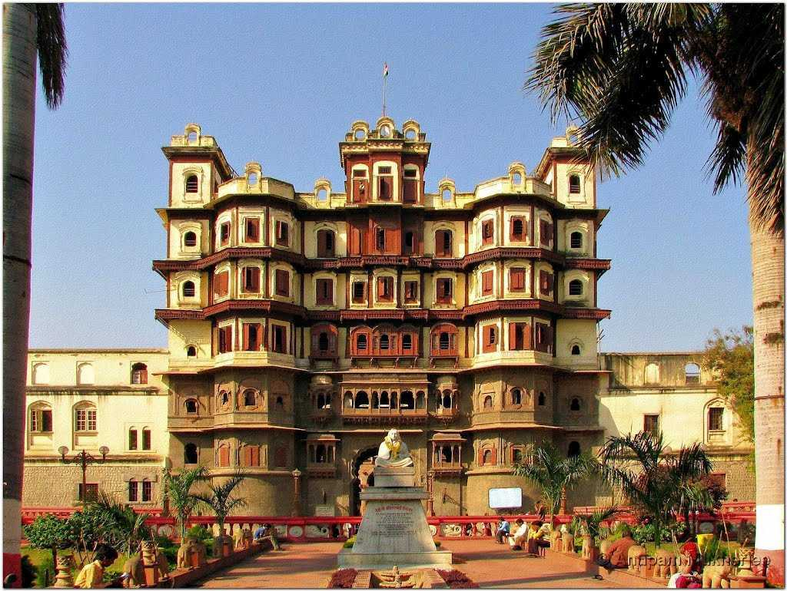

Historical places in Madhya Pradesh

1. Pachmarhi Tourism
Pachmarhi is the only hill station and is the highest point in Madhya Pradesh. Pachmarhi is also often known as "Satpura ki Rani" or the "Queen of the Satpura Range". Situated at an altitude of 1,067 metres, the picturesque town is a part of UNESCO Biosphere Reserve, home to leopards and bison.
Five sandstone cut caves on the hilltop are believed to be the spot where Pandavas stayed in Pachmarhi during their exile, making it a popular spot among religious tourists. Being at an elevated height and surrounded by bewitching forests of the Satpuras with the streams and waterfalls, Pachmarhi is a perfect weekend getaway from the nearby cities of Madhya Pradesh and Maharashtra. Since the town was discovered and developed in modern times by Captain James Forsyth of the British Army,
it houses charming churches built in colonial style architecture.
;
2. Sanchi Stupa
Located in Madhya Pradesh, the Buddhist monuments of Sanchi are one of the oldest stone structures in India. Designated a World Heritage site by UNESCO, the Great Stupa was installed in the 3rd century BC by Emperor Ashoka of the Mauryan dynasty. The sculptures and monuments present at the site are a fine example of the development of Buddhist art and architecture in Madhya Pradesh. The stupa sits atop a hill in Sanchi, 46 km from the city of Bhopal.
This large hemispherical dome, more than 50 ft high with a diameter of more than 30m was constructed to honour Lord Buddha and houses many important Buddhist relics. It is meant to serve as a sacred burial mound for the distributed remains of Lord Buddha.
Sanchi is known for its ancient Stupas, monasteries, the Ashoka Pillar, Toranas or ornate gateways with intricate carvings and other remnants of the rich Buddhist culture which date back to the 3rd century B. C. It is one of the most important places for Buddhist pilgrimage
and pilgrims from around the world visit this place.
3. BANDHAVGARH-NATIONAL-PARK
Formerly a hunting ground for the Maharajas of Rewa, the Bandhavgarh National Park is world-renowned as a tiger reserve and it is known to have the highest density of Bengal tigers in the world. The frequent sightings of royal tigers make this national park a must-visit for all wildlife enthusiasts. In 2012, around 44-49 tigers were living in the park. There are more than 22 species of mammals and 250 species of avifauna.
The park got its name from the Bandhavgarh fort situated at the height of 800 m high cliffs nearby. The fort is in ruins now, but an hour trek to the fort is worth it as it provides ample views of the surroundings. The jeep safaris are amongst the most popular activities taken by visitors.
4.Bhedaghat
Bhedaghat is known for the Dhuandar Falls (Dhuan means smoke and Dhar means flow), a huge cascade of water that falls from a height of 98 feet. Boating in Bhedaghat especially during the moonlit night would surely make up for an unforgettable experience. The boatmen of these place are storytellers that will tell you about the place in the form of interesting stories.
Also regarded as the Marble Rocks of Bhedaghat, this small town has earned a reputation for the massive 100 ft rocks on either side of the Narmada. Bhedaghat is in close proximity of one of the major cities of Madhya Pradesh of Jabalpur
The other notable attractions include 64 Yogini Temple and 'Bandar Kudini', a spot where two cliffs are so close to each other that monkeys hop over from one side to another.
5. Maheshwar
Located on the banks of the River Narmada, this gorgeous town is largely referred to as the temple town of Madhya Pradesh. It also holds a lot of mythological and historical importance given the fact that it has found a mention in the epics of Ramayana and Mahabharata.
This was the capital of Queen of the Maratha Malwa kingdom Rani Ahilyabai province, Holkar. She beautified the city with many buildings and public works, the Maratha architecture and this city was also home to her extravagant palace. Maheshwar is a renowned hub for its production of Maheshwari sarees, which makes this place a paradise for shopaholics.

6. Orchha
Orchha is a historical town located on the banks of river Betwa in Madhya Pradesh, known for its grand palaces, and intricately carved temples. Famously known as the city of palaces, it is world-renowned for the classic mural paintings, frescos and Chhatris (cenotaphs) that were constructed to commemorate the Bundela rulers. Orchha's old-world charm casts a spell on tourists from all around the world.
Founded in 1501 by Bundela Rajput Chief, Orchha literally means 'a hidden place'. It was the capital of one of the most powerful dynasties to ever rule in India- the Bundelas. The major attractions in Orchha include Ram Raja Temple (the only place where Lord Ram is worshipped both as a God and a king), Laxmi Narayan Temple (known for its unique architecture which is a melange of a fort and a temple), and the Jahangir Mahal (built in hour of Mughal emperor Jahangir). The medieval architecture of Orchha's palaces and temples is a visual delight for photographers.

7. Indore
Indore is the largest and the most populous city of Madhya Pradesh. Located on the Malwa Plateau, the charm of this city lies in its rich cultural heritage which has been preserved over centuries and along with the hints of urbanisation.
Indore has been one of the fore-runners in the development of the country in the era of modernization. One of the educational hubs in the country, Indore has both an IIT and an IIM. Indore is also the cleanest city of India. Indore has over the years established itself as the hub of trading and industrial practices in the state. The city of Indore gets its name from Indreshwar Mahadev temple. It is believed that Lord Indra meditated on this land and led Swami Indrapuri to establish this temple. Try out some local delicacies like Indori Poha at Sarafa Bazaar while you are in Indore.
8. Gwalior
Gwalior is a historic city located in the state of Madhya Pradesh. Popular because of the hilltop fort, Gwalior is full of palaces and glorious temples giving this city a majestic charm which speaks volumes of its glorious past.
A historic city founded by king Surajesan, Gwalior is a city where India's most eminent royalty once resided. Jai Vilas Pala has the largest carpet in the world which took almost 12 years to weave and two most massive chandeliers in the world that weight close to 3.5 tonnes.
The great Indian musician Tansen was born in Gwalior, and the tomb of Tansen is also an important place here. Every year, in November/December, a four-day Tansen Music festival is celebrated in the city where various classical musicians from all over the country perform on the stage near the tomb itself.
Visit the various monuments and museums, eat the local delicacies like namkeen and go boating in Tighra Dam while you are in the city.
9. Omkareshwar
Stradling the confluence of the rivers Narmada and Kaveri, the holy city of Omkareshwar houses one of the 12 revered Jyotirlingas. Shaped in the form of Hindu religious symbol 'Om', due to the merging of two valleys and a central pool of Narmada waters, it derives its name from 'Omkara' which is just one other name of Lord Shiva. It has two ancient shrines- Omkareshwar and Amarkareshwar. The sacred town also boasts of architectural wonders and scenic beauty, in addition to the pilgrim sites.
The town of Omkareshwar consists of two ancient shrines- one is Omkareshwar and the other is Amarkareshwar. The holy town is situated on the meeting point of two rivers- Narmada and Kaveri. This meeting between two of the most prominent rivers of India leaves the island in the shape of Hindu symbol Om which is one of the most revered symbols by Hindus. The whole area is bounded by mountains and it makes for a very beautiful view. Kedareshwar temple is also a must-visit for all tourists here.
10. Bhimbetka
The Bhimbetka rock shelters are an archaeological site, exhibiting the earliest traces of human life on the Indian subcontinent, and thus the beginning of the South Asian Stone Age. It was declared a World Heritage Site in 2003.